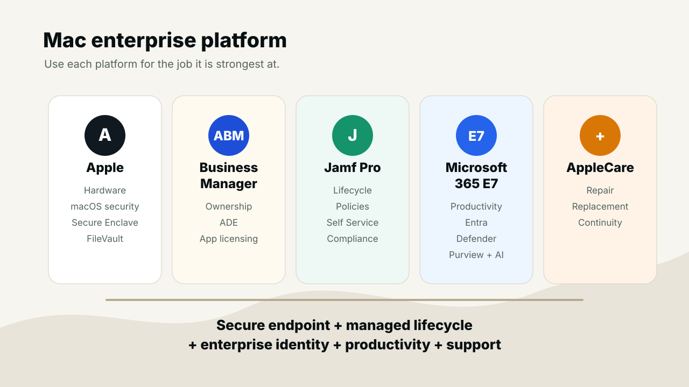
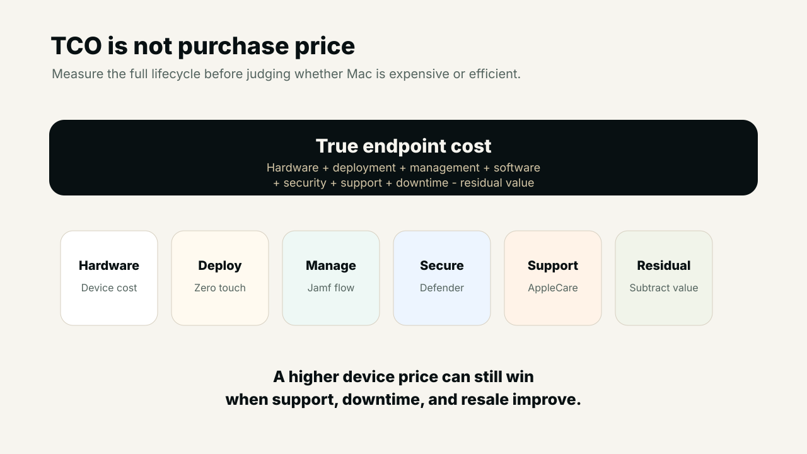
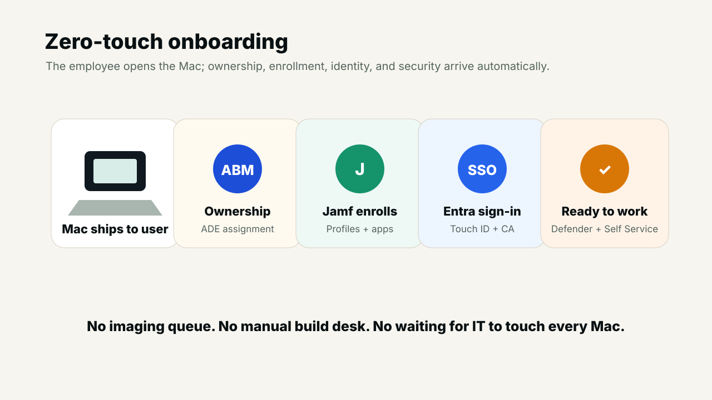
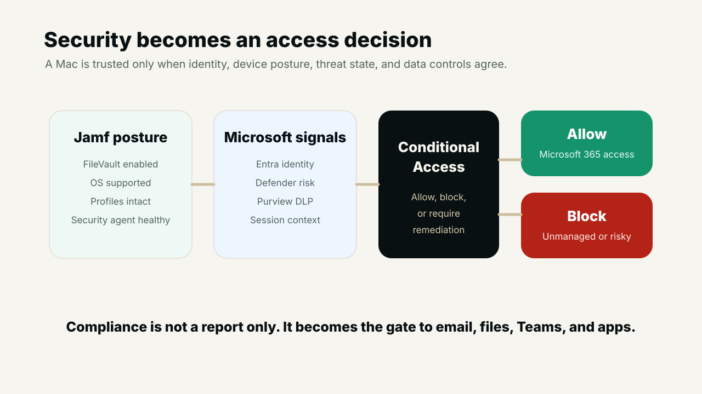

01 · The real question
Mac is not only a premium device conversation
In many organizations, Mac is discussed as if the only number that matters is the purchase price. That is too narrow. Enterprise endpoint cost includes deployment effort, service desk tickets, security tooling, identity integration, patching, downtime, repair experience, user productivity, and residual value at refresh.
A Mac program becomes stronger when it is designed as a platform: Apple hardware and macOS security at the base, Apple Business Manager for ownership and automated enrollment, Jamf Pro for Apple lifecycle management, Microsoft 365 E7 for productivity, identity, security, compliance, and AI, and AppleCare for Enterprise for support continuity.

02 · Total cost
TCO explains why the cheapest laptop may not be the cheapest endpoint
The total cost of ownership model should include hardware, deployment, management, software, security, support, downtime, and residual value. A device that costs less upfront can still become expensive if it requires more manual build time, more support effort, more security exceptions, more downtime, and lower resale or redeployment value.
Endpoint TCO =
Hardware cost
+ Deployment cost
+ Management cost
+ Software cost
+ Security cost
+ Support cost
+ Downtime cost
- Residual valueMac can improve the model when zero-touch provisioning removes build queues, Jamf reduces repeat support tasks, Apple silicon extends useful life, AppleCare reduces repair friction, and the hardware keeps meaningful residual value. The final number still depends on the organization, but the evaluation should be lifecycle-based rather than sticker-price based.

03 · Zero touch
A modern Mac should arrive ready to become corporate-owned and secure
Apple Business Manager and Automated Device Enrollment make the onboarding story simple: the Mac can ship directly to the employee, and when the user opens it, the device knows the organization owns it. Jamf then enrolls the Mac, applies configuration, installs required software, configures security controls, and presents approved tools through Self Service.
This model reduces dependency on imaging rooms, manual desk-side builds, and server-side timing. The employee gets a cleaner first-day experience, while IT gets a device that is enrolled, encrypted, configured, inventoried, and ready for compliance evaluation.

04 · User experience with control
Good employee experience does not mean weak governance
Mac can give employees a polished daily experience without sacrificing control. Platform SSO and Microsoft Entra can reduce repeated sign-in friction. Touch ID can improve authentication convenience. Jamf Self Service can let users install approved apps, repair common issues, refresh certificates, configure printers, or run health checks without opening a ticket.
Temporary admin workflows are also important. Instead of making users permanent administrators, organizations can grant time-limited privilege for approved actions, log the elevation, and remove it automatically. That keeps employees productive while avoiding a permanently over-privileged fleet.
- For employeesFaster onboarding, fewer password prompts, better battery life, Touch ID, approved self-service actions, and less waiting for IT.
- For ITConsistent configuration, inventory, automation, smart groups, remediation policies, patch visibility, and reduced repetitive tickets.
05 · Native security
Apple gives the endpoint a strong security foundation
Apple controls the hardware, firmware, operating system, security architecture, and management frameworks. That integration matters. macOS provides a strong baseline with Secure Enclave, secure boot, signed system volume, FileVault, Gatekeeper, XProtect, notarization, System Integrity Protection, Transparency Consent and Control, system extensions, network extensions, Rapid Security Responses, and managed software updates.
Jamf turns that foundation into enforceable fleet policy. It can require FileVault, escrow and rotate keys, enforce passwords and firewall settings, approve system extensions, configure PPPC permissions, deploy certificates, apply restrictions, enforce OS versions, remediate drift, and lock or erase devices when needed.
06 · Jamf and Intune
The best model is integration, not a forced either-or argument
Microsoft Intune can manage Macs and remains very valuable for cross-platform strategy, Microsoft app protection, Conditional Access, Defender deployment, Entra registration, and unified endpoint reporting. For simple Mac requirements, Intune may be enough.
Jamf is often stronger when the Apple estate is large, complex, security-sensitive, or heavily automated. Its Apple-first depth appears in detailed inventory, smart groups, extension attributes, scripting, policies, remediation workflows, macOS packaging, Self Service customization, FileVault workflows, declarative device management, OS enforcement, Apple-specific controls, logs, API automation, and pre-stage workflows.
A mature enterprise pattern is Jamf for deep Apple management and Microsoft for identity, productivity, security operations, compliance, and cross-platform access decisions.
07 · Microsoft 365 E7
E7 can reduce disconnected tooling when it is actually adopted
Microsoft 365 E7 brings together Microsoft 365 E5 capabilities with Copilot, Agent 365, Entra Suite, advanced productivity apps, security, identity, compliance, and AI-agent governance. For a Mac program, that means Microsoft can remain the enterprise productivity and control plane while Mac becomes the endpoint platform.
The value is not just license bundling. It is reducing tool sprawl. Separate products for email, collaboration, identity, MFA, Conditional Access, EDR, vulnerability management, DLP, compliance, AI assistance, and AI governance create renewals, agents, consoles, integrations, alerts, training, APIs, and troubleshooting overhead. Consolidation only saves money when redundant tools are retired and included capabilities are deployed properly.
- Microsoft Entra for identity, MFA, Platform SSO, device registration, federation, and Conditional Access.
- Microsoft Defender for Endpoint on Mac for endpoint protection, behavior monitoring, vulnerability management, EDR, and response actions.
- Microsoft Purview for sensitivity labels, endpoint DLP, information governance, audit, compliance, and insider-risk controls.
- Microsoft 365 apps, Teams, OneDrive, SharePoint, Edge, and Copilot for daily productivity on macOS.
08 · Access control
Compliance becomes the gate to business data
The strongest Mac architecture connects local compliance to cloud access. Jamf evaluates device posture. Defender evaluates endpoint risk. Purview protects data. Entra Conditional Access decides whether the user and device should reach Microsoft 365 and other protected applications.
This allows practical controls: block access if the Mac is unmanaged, FileVault is disabled, the OS is unsupported, Defender is unhealthy, security software is missing, or sign-in risk is elevated. The result is a cleaner model: a Mac is trusted because its posture is proven, not because it is inside the company.

09 · Patch and app lifecycle
A Mac fleet needs disciplined application management
Enterprise Mac management is not finished after enrollment. Third-party application patching must be operationalized for Chrome, Edge, Zoom, Slack, VS Code, Java, Python, Docker, VPN clients, security tools, browser extensions, and developer utilities. A mature flow detects versions, compares them with an approved baseline, tests in pilot rings, rolls out to production, notifies users, enforces deadlines, reports failures, retries remediation, and escalates devices that remain unhealthy.
Jamf Smart Groups make this practical. Devices can move automatically based on OS version, encryption state, security-agent health, certificate status, app version, storage, department, ownership, compliance, or custom extension attributes. Those groups can then trigger updates, remediation, prompts, certificate repair, Defender reinstall, FileVault key rotation, or escalation.
10 · Support and continuity
Repair experience also belongs in the business case
Downtime has a cost. AppleCare for Enterprise can reduce operational disruption where the service model fits the organization. Faster repair, replacement, and enterprise support can reduce the need for large spare pools, complex shipping processes, and extended employee downtime.
Replacement workflows also become simpler when the environment is cloud-backed. Lock or erase the old Mac, ship a replacement, let the user sign in, allow Jamf to apply configuration, reinstall Microsoft 365 apps, restore OneDrive data, reapply security controls, and get the employee working again without a traditional device image.
11 · Roadmap
Roll out the platform in phases
A credible Mac strategy should be phased. Start with assessment, then build the foundation, then connect identity and access, then deploy security, then mature app lifecycle, then improve user experience, then consolidate tools, and finally measure continuously.
Practical rollout path
1. Assess Mac-suitable roles, apps, current endpoint cost, and compliance needs
2. Configure Apple Business Manager, ADE, Jamf enrollment, FileVault, and baselines
3. Add Entra registration, Platform SSO, MFA, Conditional Access, and compliance flow
4. Deploy Defender, Purview, PPPC, system extensions, DLP, and response workflows
5. Build Self Service, patch policies, pilot rings, production rings, and OS enforcement
6. Add temporary admin workflows, repair workflows, user guidance, and health checks
7. Retire duplicate agents and measure support, security, user, and cost outcomes12 · Balanced decision
Mac is powerful, but it should still be role-based
A good enterprise strategy does not force Mac everywhere. Windows may still be the better platform for legacy Windows-only applications, engineering tools, manufacturing systems, finance apps, certain peripherals, traditional Group Policy dependencies, or highly cost-sensitive shared-device cases.
The strongest conclusion is balanced: use Mac where it improves security, user experience, developer or creative workflow, operational efficiency, support reduction, and lifecycle value. Use Windows where application compatibility or business requirements make it stronger. Govern the mixed environment centrally through Microsoft Entra, Defender, Purview, Conditional Access, and a clear endpoint operating model.
The strongest design is not Apple versus Microsoft or Jamf versus Intune. It is Apple for the endpoint, Jamf for Apple lifecycle management, and Microsoft for productivity, identity, security, compliance, and AI.
Useful links
References and implementation utilities
- Apple Automated Device EnrollmentApple deployment guide for automated enrollment flows.
- Apple Platform SSOApple guidance for platform single sign-on on managed Mac.
- Microsoft Enterprise SSO plug-in for Apple devicesMicrosoft identity integration guidance for Apple platforms.
- Microsoft Defender for Endpoint on MacMicrosoft deployment and operation guidance for Defender on macOS.
- Onboard macOS devices into Microsoft Purview using Jamf ProMicrosoft Purview endpoint DLP onboarding guidance for Jamf-managed Macs.
- Jamf ProApple device management, application deployment, inventory, policies, and remediation platform.
- AppleCare for EnterpriseApple enterprise support and service continuity information.